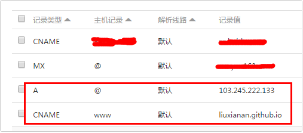
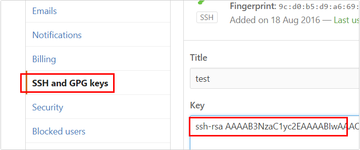
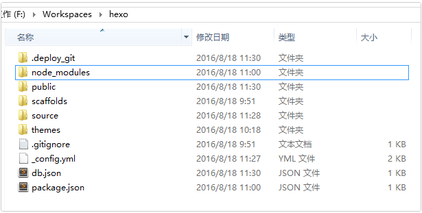
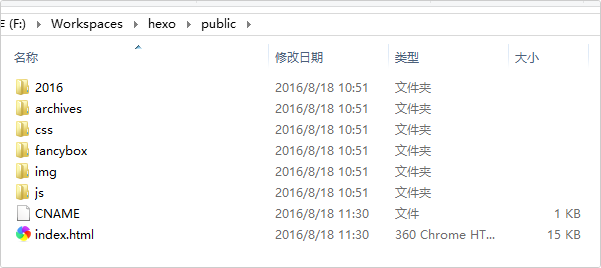
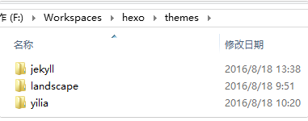
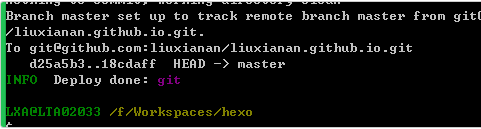
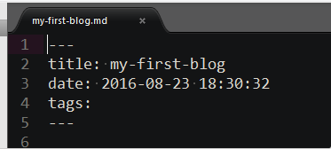
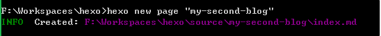
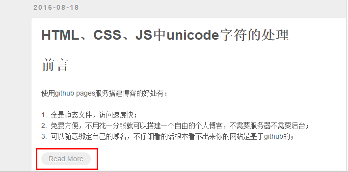

github+hexo免费搭建博客
前言
这是我第一篇博客，太开心了，第一篇就记录一下用gitHub+hexo搭建博客的详细步骤吧。
使用github pages服务搭建博客的好处有：
1.全是静态文件，访问速度快；
2.免费方便，不用花一分钱就可以搭建一个自由的个人博客，不需要服务器不需要后台；
3.可以随意绑定自己的域名，不仔细看的话根本看不出来你的网站是基于github的；
4.数据绝对安全，基于github的版本管理，想恢复到哪个历史版本都行；
5.博客内容可以轻松打包、转移、发布到其它平台等等；
准备工作
在开始一切之前，你必须已经：
- 有一个github账号，没有的话去注册一个；
- 安装了node.js、npm，并了解相关基础知识；
- 安装了git for windows（或者其它git客户端）
本文所使用的环境： - Windows8.1
- node.js@5.5.0
- git@1.9.2
- hexo@3.2.2
搭建github博客
创建仓库
新建一个名为你的用户名.github.io的仓库，比如说，如果你的github用户名是test，
那么你就新建test.github.io的仓库（必须是你的用户名，其它名称无效），将来你的网站访问地址就是 http://test.github.io 了，是不是很方便？
由此可见，每一个github账户最多只能创建一个这样可以直接使用域名访问的仓库。
几个注意的地方： - 注册的邮箱一定要验证，否则不会成功；
- 仓库名字必须是：username.github.io，其中username是你的用户名；
- 仓库创建成功不会立即生效，需要过一段时间，大概10-30分钟，或者更久，我的等了半个小时才生效；
创建成功后，默认会在你这个仓库里生成一些示例页面，以后你的网站所有代码都是放在这个仓库里啦。绑定域名
当然，你不绑定域名肯定也是可以的，就用默认的 xxx.github.io 来访问，如果你想更个性一点，想拥有一个属于自己的域名，那也是OK的。
首先你要注册一个域名，域名注册以前总是推荐去godaddy，现在觉得其实国内的阿里云也挺不错的，价格也不贵，毕竟是大公司，放心！
绑定域名分2种情况：带www和不带www的。
域名配置最常见有2种方式，CNAME和A记录，CNAME填写域名，A记录填写IP，由于不带www方式只能采用A记录，所以必须先ping一下你的用户名.github.io的IP，然后到你的域名DNS设置页，将A记录指向你ping出来的IP，将CNAME指向你的用户名.github.io，这样可以保证无论是否添加www都可以访问，如下：

然后到你的github项目根目录新建一个名为CNAME的文件（无后缀），里面填写你的域名，加不加www看你自己喜好，因为经测试： - 如果你填写的是没有www的，比如 mygit.me，那么无论是访问 http://www.mygit.me 还是 http://mygit.me ，都会自动跳转到 http://mygit.me
- 如果你填写的是带www的，比如 www.mygit.me ，那么无论是访问 http://www.mygit.me 还是 http://mygit.me ，都会自动跳转到 http://www.mygit.me
- 如果你填写的是其它子域名，比如 abc.mygit.me，那么访问 http://abc.mygit.me 没问题，但是访问 http://mygit.me ，不会自动跳转到 http://abc.mygit.me
- 另外说一句，在你绑定了新域名之后，原来的你的用户名.github.io并没有失效，而是会自动跳转到你的新域名。
配置SSH key
为什么要配置这个呢？因为你提交代码肯定要拥有你的github权限才可以，但是直接使用用户名和密码太不安全了，所以我们使用ssh key来解决本地和服务器的连接问题。
用git bash执行如下命令：1$ cd ~/. ssh #检查本机已存在的ssh密钥
如果提示：No such file or directory 说明你是第一次使用git。
然后连续3次回车，最终会生成一个文件在用户目录下，打开用户目录，找到.ssh\id_rsa.pub文件，记事本打开并复制里面的内容，打开你的github主页，进入个人设置 -> SSH and GPG keys -> New SSH key：

将刚复制的内容粘贴到key那里，title随便填，保存。
测试是否成功
|
|
如果提示Are you sure you want to continue connecting (yes/no)?，输入yes，然后会看到：
Hi liuxianan! You’ve successfully authenticated, but GitHub does not provide shell access.
看到这个信息说明SSH已配置成功！
此时你还需要配置：
具体这个配置是干嘛的我没仔细深究。
使用hexo写博客
hexo简介
Hexo是一个简单、快速、强大的基于 Github Pages 的博客发布工具，支持Markdown格式，有众多优秀插件和主题。
官网： http://hexo.io
github: https://github.com/hexojs/hexo
原理
由于github pages存放的都是静态文件，博客存放的不只是文章内容，还有文章列表、分类、标签、翻页等动态内容，假如每次写完一篇文章都要手动更新博文目录和相关链接信息，相信谁都会疯掉，所以hexo所做的就是将这些md文件都放在本地，每次写完文章后调用写好的命令来批量完成相关页面的生成，然后再将有改动的页面提交到github。
注意事项
安装之前先来说几个注意事项：
很多命令既可以用Windows的cmd来完成，也可以使用git bash来完成，但是部分命令会有一些问题，为避免不必要的问题，建议全部使用git bash来执行；
hexo不同版本差别比较大，网上很多文章的配置信息都是基于2.x的，所以注意不要被误导；
hexo有2种_config.yml文件，一个是根目录下的全局的_config.yml，一个是各个theme下的；
安装
|
|
初始化
在电脑的某个地方新建一个名为hexo的文件夹（名字可以随便取），比如我的是F:\Workspaces\hexo，由于这个文件夹将来就作为你存放代码的地方，所以最好不要随便放。
hexo会自动下载一些文件到这个目录，包括node_modules，目录结构如下图：

执行以上命令之后，hexo就会在public文件夹生成相关html文件，这些文件将来都是要提交到github去的：

hexo s是开启本地预览服务，打开浏览器访问 http://localhost:4000 即可看到内容，很多人会碰到浏览器一直在转圈但是就是加载不出来的问题，一般情况下是因为端口占用的缘故，因为4000这个端口太常见了，解决端口冲突问题请参考这篇文章：
http://blog.liuxianan.com/windows-port-bind.html
修改主题
既然默认主题很丑，那我们别的不做，首先来替换一个好看点的主题。这是 官方主题。
个人比较喜欢的2个主题：hexo-theme-jekyll 和 hexo-theme-yilia。
首先下载这个主题：
下载后的主题都在这里：

修改_config.yml中的theme: landscape改为theme: yilia，然后重新执行hexo g来重新生成。
如果出现一些莫名其妙的问题，可以先执行hexo clean来清理一下public的内容，然后再来重新生成和发布。
上传之前
在上传代码到github之前，一定要记得先把你以前所有代码下载下来（虽然github有版本管理，但备份一下总是好的），因为从hexo提交代码时会把你以前的所有代码都删掉。
上传到github
如果你一切都配置好了，发布上传很容易，一句hexo d就搞定，当然关键还是你要把所有东西配置好。
首先，ssh key肯定要配置好。
其次，配置_config.yml中有关deploy的部分：
正确写法：
错误写法：
原因是还需要安装一个插件：
其它命令不确定，部署这个命令一定要用git bash，否则会提示Permission denied (publickey).
打开你的git bash，输入hexo d就会将本次有改动的代码全部提交，没有改动的不会：

常用hexo命令
常见命令
缩写：
组合命令：
_config.yml
这里面都是一些全局配置，每个参数的意思都比较简单明了，所以就不作详细介绍了。
需要特别注意的地方是，冒号后面必须有一个空格，否则可能会出问题.
写博客
定位到我们的hexo根目录，执行命令：
hexo会帮我们在_posts下生成相关md文件：
我们只需要打开这个文件就可以开始写博客了，默认生成如下内容：

当然你也可以直接自己新建md文件，用这个命令的好处是帮我们自动生成了时间。
一般完整格式如下：
那么hexo new page ‘postName’命令和hexo new ‘postName’有什么区别呢？
生成如下：

最终部署时生成：hexo\public\my-second-blog\index.html，但是它不会作为文章出现在博文目录。
如何让博文列表不显示全部内容
默认情况下，生成的博文目录会显示全部的文章内容，如何设置文章摘要的长度呢？
答案是在合适的位置加上即可，例如：
最终效果：
